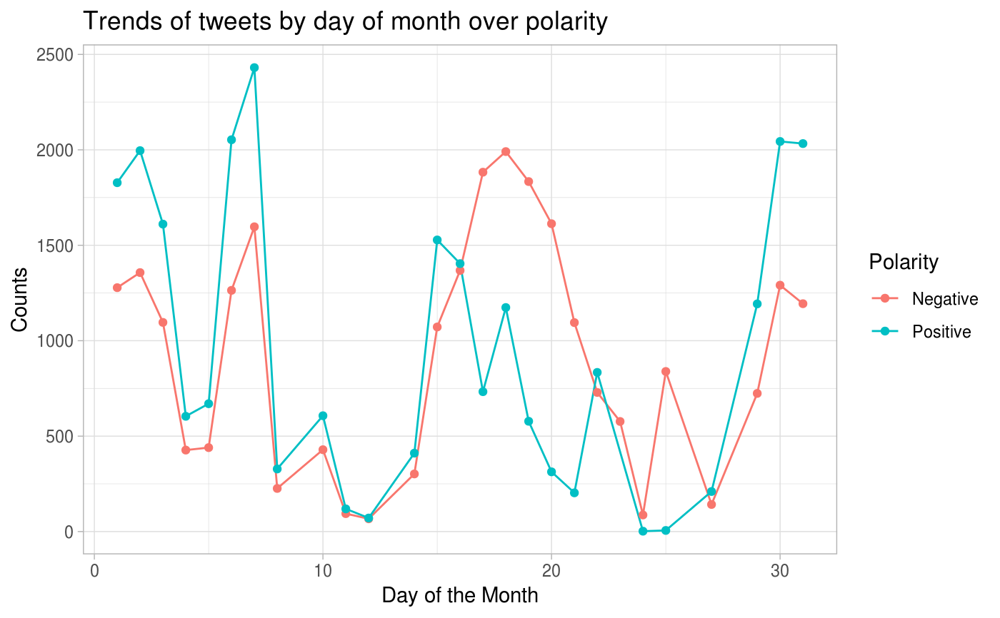

Generate time series plots to analyze given data with filters and visualize over polarity and return the raw data, date/day aggregate data and a plots for the same.
Arguments
| data | the sentiment140 train or test data containing variables |
|---|---|
| user_list | a vector of users for which to filter the dataset |
| start_date_time | input start_date_time in POSIXct format on which to filter the dataset |
| end_date_time | input end_date_time in POSIXct format on which to filter the dataset |
| keyword_list | a list of string keywords on which to filter the dataset |
Value
a list object with raw filtered dataframe, date_counts aggregated dataframe that holds the frequency counts of date by polarity, day_counts aggregated dataframe that holds the frequency counts of day by polarity and a plots depicting their relationship.
Examples
time_series()#> $raw #> # A tibble: 50,000 x 14 #> polarity id date query user text nouns adjectives #> <chr> <int> <dttm> <chr> <chr> <chr> <int> <int> #> 1 Negative 2.01e9 2009-06-03 09:26:56 NO_Q… Nina… n fe… 3 0 #> 2 Positive 1.93e9 2009-05-27 05:45:38 NO_Q… RBCK… @ong… 14 1 #> 3 Negative 2.05e9 2009-06-06 02:27:00 NO_Q… t3ll… an m… 4 2 #> 4 Negative NA 2009-06-19 18:58:49 NO_Q… Joyc… nd n… 7 0 #> 5 Positive 2.07e9 2009-06-07 17:56:22 NO_Q… Shau… @yan… 4 3 #> 6 Positive 1.56e9 2009-04-19 19:00:50 NO_Q… shor… @ust… 4 1 #> 7 Positive 1.84e9 2009-05-18 12:35:39 NO_Q… molt… orni… 5 0 #> 8 Negative 2.07e9 2009-06-07 21:14:40 NO_Q… chel… Pod … 3 0 #> 9 Negative NA 2009-06-17 07:38:41 NO_Q… call… an't… 6 1 #> 10 Negative NA 2009-06-25 08:50:36 NO_Q… Love… " wi… 2 0 #> # … with 49,990 more rows, and 6 more variables: prepositions <int>, #> # articles <int>, pronouns <int>, verbs <int>, adverbs <int>, #> # interjections <int> #> #> $date_counts #> # A tibble: 73 x 3 #> date polarity count #> <date> <fct> <int> #> 1 2009-04-07 Negative 265 #> 2 2009-04-07 Positive 336 #> 3 2009-04-18 Negative 225 #> 4 2009-04-18 Positive 271 #> 5 2009-04-19 Negative 407 #> 6 2009-04-19 Positive 578 #> 7 2009-04-20 Negative 218 #> 8 2009-04-20 Positive 313 #> 9 2009-04-21 Negative 131 #> 10 2009-04-21 Positive 203 #> # … with 63 more rows #> #> $day_counts #> # A tibble: 53 x 3 #> day polarity count #> <int> <fct> <int> #> 1 1 Negative 1278 #> 2 1 Positive 1828 #> 3 2 Negative 1357 #> 4 2 Positive 1996 #> 5 3 Negative 1096 #> 6 3 Positive 1611 #> 7 4 Negative 427 #> 8 4 Positive 604 #> 9 5 Negative 440 #> 10 5 Positive 670 #> # … with 43 more rows #> #> $plot_date#> #> $plot_day#>